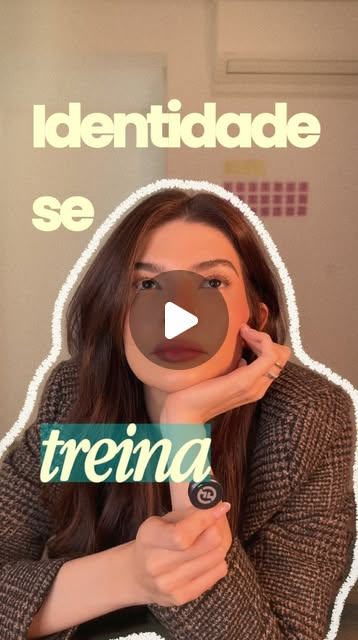
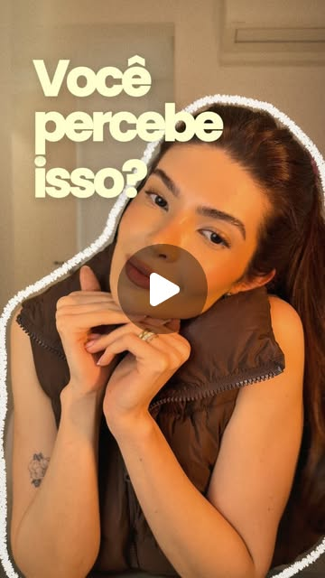

Mente · Hábitos · Fé · Execução
Transforme sua mente. Construa uma vida com propósito.
Coaching de inteligência emocional para mulheres que querem clareza sobre quem são, hábitos que se sustentam e coragem para executar. Une neurociência, método CIS e fé.
Sem compromisso · A conversa acontece pelo WhatsApp · Atendimento online e presencial
- Pós em Neurociência aplicada
- Coach Integral Sistêmico — Febracis
Estou plantando hoje a vida que quero colher amanhã, enquanto busco viver tudo aquilo que Deus sonhou para mim.
Sobre mim
De engenheira a mentora de transformação
Sou formada em Engenharia e pós-graduada em Neurociência aplicada ao comportamento humano. Durante anos, atuei no mundo corporativo até entender que meu verdadeiro chamado era ajudar pessoas a transformarem sua mente, seus hábitos e sua vida.
Estudei profundamente sobre o funcionamento do cérebro, mente, hábitos e comportamento humano e me formei em Coaching Integral Sistêmico, unindo ciência, prática e fé para ajudar mulheres que desejam viver com clareza, identidade e propósito.
Minha missão é te ajudar a te tornares a mulher que Deus sonhou, de dentro para fora.
Engenheira
Formação sólida que me ensinou estrutura, análise e resolução de problemas.
Pós em Neurociência
Entendimento profundo sobre mente, emoções e comportamento humano.
Coaching Integral Sistêmico
Formação completa (Febracis, método Paulo Vieira) para acompanhar processos de transformação com profundidade.
Cristã
Minha fé em Deus é a base que sustenta todo o meu trabalho e propósito.
Para quem é
Para mulheres que sabem que podem mais.
Você não precisa estar em crise para querer mais clareza. Se algum destes pontos é você hoje, o processo foi desenhado exatamente para isso:
- Que desejam clareza sobre quem são e onde querem chegar
- Que querem criar hábitos consistentes e vencer a procrastinação
- Que buscam equilíbrio entre vida pessoal, profissional e espiritual
- Que desejam viver com mais leveza, propósito e realização
Pequenas escolhas de hoje constroem sua melhor versão de amanhã.
Como funciona
Um caminho claro, do diagnóstico à transformação.
Nada de conversa solta: cada encontro tem objetivo, ferramenta e próximo passo definidos.
-
1
Diagnóstico
Entendo sua história, desafios e objetivos.
-
2
Plano personalizado
Criamos um plano claro e estratégico para você.
-
3
Mentoria & Coaching
Encontros profundos para gerar clareza e ação.
-
4
Implementação
Colocamos em prática com consistência.
-
5
Transformação
Você colhe os frutos da nova mentalidade.
Veja meu conteúdo antes de decidir
Reflexões sobre mente, hábitos, fé e propósito. É a forma mais honesta de sentir se a minha abordagem faz sentido para você.

Falar em público era difícil para ele. Então ele começou a repetir uma nova direção — e a neuroplasticidade explica por quê. Ver no Instagram
Medo, ansiedade, distração. A Bíblia mostra que existe uma batalha acontecendo também na mente. Ver no InstagramO que dizem sobre o processo
"As sessões me ajudaram a ter clareza sobre quem eu sou, o que eu quero e como chegar lá. Hoje me sinto mais confiante e em paz comigo mesma."
— L.S.
"A mentoria da Ágatha é profunda, prática e transformadora. Ela une fé, ciência e ferramentas que realmente funcionam."
— M.A.
"Foi o melhor investimento que já fiz em mim. Minha mentalidade mudou e isso se refletiu em todas as áreas da minha vida."
— B.P.
Comece por aqui
O primeiro passo não custa nada.
Conversa gratuita, sem compromisso
Antes de qualquer investimento, conversamos. Eu entendo o seu momento, você entende como o processo funciona, e só então decidimos juntas se faz sentido seguir. Se não fizer, você sai com clareza mesmo assim.
Investimento
Transparência total sobre o processo completo.
O acompanhamento é um pacote fechado de 12 sessões, porque transformação real não acontece em um encontro isolado. Estes são os valores:
Presencial
Encontros presenciais
R$ 600por sessão
- Pacote de 12 sessões
- Duração de 1h30 por sessão
- Acompanhamento personalizado
- Ferramentas práticas para sua transformação
- Ambiente seguro e confidencial
Investimento total: R$ 7.200,0012 sessões · até 12x no cartão
À vista: R$ 6.840,00 (5% de desconto)
Quero o presencialOnline
Encontros por videochamada, de onde você estiver
R$ 545por sessão
- Pacote de 12 sessões
- Duração de 1h30 por sessão
- Acompanhamento personalizado
- Ferramentas práticas para sua transformação
- Ambiente seguro e confidencial
Investimento total: R$ 6.540,0012 sessões · até 12x no cartão
À vista: R$ 6.213,00 (5% de desconto)
Quero o onlineFormas de pagamento
- À vista5% de desconto
- Cartão de créditoaté 12x
- Processo seguroe sigiloso
Ainda em dúvida?
Não precisa decidir agora. Comece pela conversa gratuita e tire todas as dúvidas.
Tirar minhas dúvidasPerguntas frequentes
Provavelmente você está se perguntando...
O investimento é alto. Como saber se vale a pena para mim?
É exatamente para isso que existe a conversa gratuita. Nela eu entendo o seu momento e te digo com honestidade se o processo faz sentido agora. Prefiro que você invista com clareza do que por impulso, e é por isso que o valor está aqui na página, aberto, antes de qualquer conversa.
Por que o pacote mínimo é de 12 sessões?
Porque mudança de mentalidade e de hábito não acontece em um encontro isolado. As primeiras sessões geram clareza, as seguintes constroem a estrutura e as últimas consolidam a prática. Um pacote menor criaria a ilusão de processo sem entregar transformação real.
Preciso ter um problema grande para procurar coaching?
Não. A maioria das minhas clientes já está bem e sente que pode decidir e viver com mais clareza. Coaching não é para uma crise, é direção para quem já quer ir além.
Preciso ser cristã para fazer o processo?
Não. A fé é a base que sustenta o meu trabalho e eu não escondo isso, mas as ferramentas que aplico vêm da neurociência e do método CIS e funcionam independente da sua crença. Respeito o seu caminho e conduzo o processo no ponto em que você está.
Não sei se vou ter tempo. Como funciona na prática?
São encontros de 1h30, combinados de acordo com a sua agenda, no formato online ou presencial. Entre as sessões existem práticas para aplicar no seu dia a dia — feitas para caber na sua rotina, não para virar mais uma cobrança.
As sessões são realmente online?
Sim, todas as sessões da modalidade online acontecem por videochamada, então você pode participar de onde estiver. Também atendo no formato presencial.
Como faço para agendar?
Basta clicar em qualquer botão desta página e me chamar no WhatsApp. A conversa inicial é gratuita e sem compromisso: vamos combinar juntas a melhor modalidade e horário para você.
Vamos caminhar juntas?
Transformação é uma decisão — e a primeira não custa nada. Me manda uma mensagem e vamos conversar sobre o seu momento, sem compromisso.
Agendar conversa gratuita Resposta pelo WhatsApp · Online ou presencial